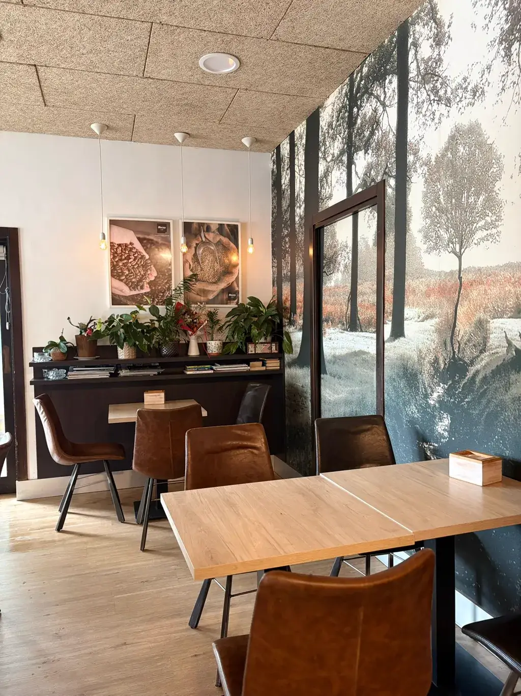

Café recién hecho
Café molido al momento y servido con calma. Cuidamos la máquina, el punto de la leche y la temperatura para que cada taza salga como tiene que salir.

Desde el primer café del día hasta el vermut de la tarde. Con terraza junto al Bidasoa, bollería de verdad y ese ambiente que invita a quedarse.

Somos una cafetería de barrio en pleno centro de Bera, en Iturlandeta Karrika. De esas en las que entras una mañana de paso y acabas volviendo cada día. Un interior cálido con mural de bosque, bombillas Edison y estanterías con libros — hecho para quedarse, no para pasar de largo.
Nos gusta hacer las cosas sin prisa: el café recién molido, la leche bien texturizada y la bollería en su sitio. Y cuando apetece el aire libre, la terraza junto al Bidasoa espera con sus sombrillas y vistas al río. Nada de teatro: solo un buen café, un croissant que apetece y un trato cercano, del de saludar por el nombre.
Por aquí pasa de todo: vecinos antes del trabajo, gente que sube al monte, viajeros camino de Francia y quien se acerca desde Lesaka o Etxalar. A todos les ponemos la misma taza con el mismo cariño.
Tres ideas sencillas que guían lo que hacemos cada día detrás de la barra.
Café molido al momento y servido con calma. Cuidamos la máquina, el punto de la leche y la temperatura para que cada taza salga como tiene que salir.
Croissants dorados, napolitanas, bizcochos y tartas. Cada día la vitrina se llena de bollería recién hecha lista para acompañar el café o endulzar la tarde.
Aquí no eres un número. Saludamos por el nombre, sabemos cómo te gusta el café y siempre hay sitio para charlar un rato sin prisas.
Interior cálido para el café de la mañana, vitrina llena de bollería recién hecha y terraza junto al Bidasoa para cuando apetece respirar.


La mañana empieza pronto. A las 7:30 ya huele a café y a bollería recién puesta. Los primeros llegan a desayunar antes del trabajo; los que van de paso piden su café para llevar camino de Francia o antes de subir a Larun.
A mediodía, la barra se anima con los pintxos del día: tortilla recién hecha, bocadillos y una copa de vino rosado con la que brindar sin prisa. En verano, todo eso en la terraza junto al Bidasoa, con el sonido del río de fondo y las sombrillas puestas.
Por la tarde volvemos a abrir y el local se llena de meriendas: chocolate, tartas y bollería para las cuadrillas, las familias y quien sale de clase. Cierre, café, vuelta a empezar. Así, día tras día, llevamos siendo el sitio donde el Bidasoa para a tomar algo.
"Un buen café no se mide en segundos, sino en las ganas de volver al día siguiente."
— El equipo de Sara Kafetegia
Bera es una de las cinco villas de Bortziriak, junto a Lesaka, Etxalar, Igantzi y Arantza, enclavada entre el río Bidasoa y la montaña. Tierra de frontera, a un paso de Sara, Ainhoa y San Juan de Luz, con Larun vigilando desde sus 905 metros y el Bidasoa marcando el ritmo del valle.
Nuestra terraza está junto a ese río: las mesas junto al agua, las sombrillas abiertas en verano y el sonido del Bidasoa de fondo. Una ubicación que convierte el café de las diez o el aperitivo del mediodía en algo que merece la pena. Somos el sitio al que volver cada vez que se pasa por Bera.
Ven a vernosInterior, terraza, barra y momentos de los de siempre. Toca cualquier foto para verla más grande.


Mira la carta o pásate directamente. La cafetera está siempre lista.
